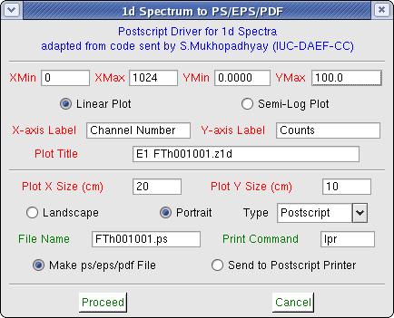

Graphic files in these formats are useful for printing and including inside Latex or MS-Word documents.

The default zoom settings, titles and other options are taken from the current screen display settings, but can be changed before creating the ps/eps/pdf file.
The size of the plot in cm can be specified.
Sending the ouput directly to a printer using the lpr command works if you have a postscript printer. Otherwise save output to a file and view/print using an appropiate PS or PDF viewer.